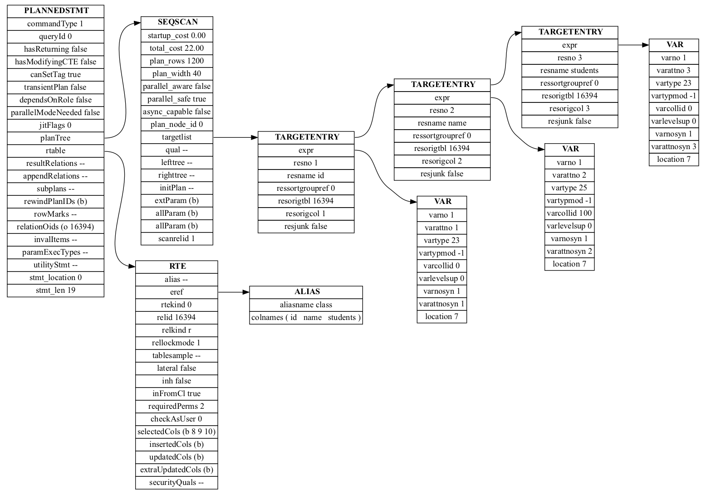
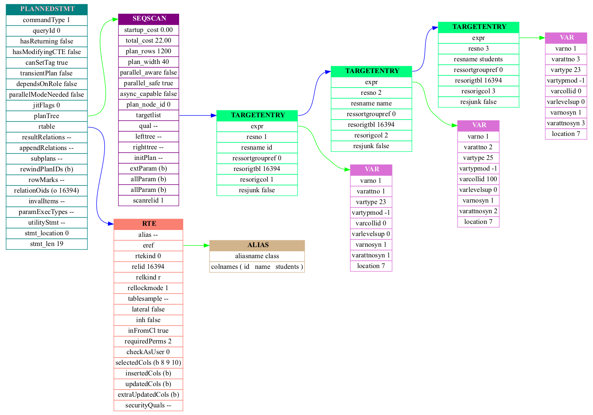

Welcome to pg_node2graph
Welcome to the documentation of pg_node2graph.
Introduction
The pg_node2graph is a tool that converts PostgreSQL node trees into PNG formatted images. It is inspired by pgNodeGraph, rewritten in C++, and boasting the following features:
- Improve the layout of list nodes.
- Support customized node colors.
Installation
At present, you can only install pg_node2graph through source code. There are two ways to install pg_node2graph: make and meson.
Install using make
git clode https://github.com/japinli/pg_node2graph.git
cd pg_node2graph
make
sudo make install
Install using meson
git clode https://github.com/japinli/pg_node2graph.git
cd pg_node2graph
meson setup build
cd build
meson compile
sudo meson install
Uninstallation
Uninstall using make
If you install pg_node2graph through make command, you can remove it through
the following command:
cd pg_node2graph
sudo make uninstall
Uninstall using meson
If you install pg_node2graph through meson command, you can remove it through
the following command:
cd pg_node2graph/build
sudo ninja uninstall
Uninstall directly
Of course, the easist way to uninstall pg_node2graph is rm command, as
following:
sudo rm /usr/local/bin/pg_node2graph
Usage
The pg_node2graph requires Graphviz graph visualization software. To install Graphviz, please see the official documentation.
To generate a picture from the PostgreSQL node tree, you should follow the following three steps:
-
Prepare PostgreSQL node tree. You can generate the PostgreSQL node tree into a log file by enabling the following parameters:
SET debug_pretty_print TO on; SET debug_print_parse TO on; SET debug_print_plan TO on; -
Extract node tree. You can extract node tree information from the PostgreSQL log file after executing the SQL query, and then save the node tree into a file.
-
Generate a node picture. Use the pg_node2graph to convert the node tree into a picture.
Example
Firstly, create a new table class.
CREATE TABLE class(id int, name text, students int);
Then, make sure PostgreSQL output the parse and plan node tree into log file.
SET debug_pretty_print TO on; -- optional
SET debug_print_parse TO on;
SET debug_print_plan TO on;
Let's execute the following SQL to fetch records from class table:
SELECT * FROM class;
The PostgreSQL server will output the parse node tree and plan node tree into the log file. According to the type of queries, the output might be thousands of lines. Here is the plan node tree of the above query.
2022-08-28 07:37:51.841 CST [22278] DETAIL: {PLANNEDSTMT
:commandType 1
:queryId 0
:hasReturning false
:hasModifyingCTE false
:canSetTag true
:transientPlan false
:dependsOnRole false
:parallelModeNeeded false
:jitFlags 0
:planTree
{SEQSCAN
:startup_cost 0.00
:total_cost 22.00
:plan_rows 1200
:plan_width 40
:parallel_aware false
:parallel_safe true
:async_capable false
:plan_node_id 0
:targetlist (
{TARGETENTRY
:expr
{VAR
:varno 1
:varattno 1
:vartype 23
:vartypmod -1
:varcollid 0
:varlevelsup 0
:varnosyn 1
:varattnosyn 1
:location 7
}
:resno 1
:resname id
:ressortgroupref 0
:resorigtbl 16394
:resorigcol 1
:resjunk false
}
{TARGETENTRY
:expr
{VAR
:varno 1
:varattno 2
:vartype 25
:vartypmod -1
:varcollid 100
:varlevelsup 0
:varnosyn 1
:varattnosyn 2
:location 7
}
:resno 2
:resname name
:ressortgroupref 0
:resorigtbl 16394
:resorigcol 2
:resjunk false
}
{TARGETENTRY
:expr
{VAR
:varno 1
:varattno 3
:vartype 23
:vartypmod -1
:varcollid 0
:varlevelsup 0
:varnosyn 1
:varattnosyn 3
:location 7
}
:resno 3
:resname students
:ressortgroupref 0
:resorigtbl 16394
:resorigcol 3
:resjunk false
}
)
:qual <>
:lefttree <>
:righttree <>
:initPlan <>
:extParam (b)
:allParam (b)
:allParam (b)
:scanrelid 1
}
:rtable (
{RTE
:alias <>
:eref
{ALIAS
:aliasname class
:colnames ("id" "name" "students")
}
:rtekind 0
:relid 16394
:relkind r
:rellockmode 1
:tablesample <>
:lateral false
:inh false
:inFromCl true
:requiredPerms 2
:checkAsUser 0
:selectedCols (b 8 9 10)
:insertedCols (b)
:updatedCols (b)
:extraUpdatedCols (b)
:securityQuals <>
}
)
:resultRelations <>
:appendRelations <>
:subplans <>
:rewindPlanIDs (b)
:rowMarks <>
:relationOids (o 16394)
:invalItems <>
:paramExecTypes <>
:utilityStmt <>
:stmt_location 0
:stmt_len 19
}
You should copy and paste the node tree in text form and save it into a file,
such as nodes/example1.node.
Finally, run the following command to generate a picture for nodes/example1.node.
pg_node2graph nodes/example1.node
If there is no erros, you will see message like this.
processing "nodes/example1.node" ... ok
At last, you can see the nodes directory contains a file named
example1.node.png, which is our picture converted from the
nodes/example1.node.

Customize colors
The pg_node2graph supports customizing the node's color by providing a color mapping configuration file.
In the configuration file, lines that begin with the hash symbol are comments. The blank lines will be ignored. The other lines are color mappings.
The color mapping configuration contains three parts, separated by commas:
- node name
- background and border-color
- font color of the first record in a node (optional)
For example:
PLANNEDSTMT, teal, pink
QUERY, webmaroon, red
RTE, salmon
SEQSCAN, webpurple, white
TARGETENTRY, springgreen
VAR, orchid, whitesmoke
ALIAS, tan
The above mappings will change the color for PLANNEDSTMT, QUERY, RTE,
SEQSCAN, TARGETENTRY, VAR and ALIAS nodes. Assuming we save it
into test_node_color.map, you can run the following command to generate
a new picture with colors.
pg_node2graph -c -n test_node_color.map nodes/example1.node
Here is the new picture with colors.

You can visit here to find more color names.
Enjoy yourself!